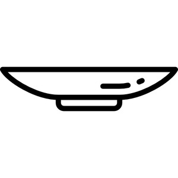

ⲃⲓⲛⲁϫ B, ⲡⲓⲛⲉϭ F (Mt 14) nn m, dish, is Gk πίναξ: Mt 14 8, Mk 6 25, Lu 11 39 (all S ⲡⲓⲛⲁⲝ); Ex 25 29 τρύβλιον (var πίναξ & ib 37 16) جام, Mt 26 23 τρύβλ. (S ϫⲏ, cf Si 34 14), TEuch 2 44 = ⲇⲓⲥⲕⲟⲥ (cf BM 340) صينية, C 89 13 = MG 17 352, K 150 صحفة، صحن, ib 252 قصعة, P 55 11 مشرد، جفنة, TEuch 2 494 ⲧⲁⲕⲟⲗⲟⲩⲑⲓⲁ ⲙⲡⲓⲃ. طشت (cf BM 920 n). In P 44 11, 54, 66 πίναξ = طبق، سكرجة; MG 25 257, PO 11 373 dishes for food.
(noun masculine)
container
dish [πιναξ]

complete
41b
266b
ⲡⲓⲛⲉϭ v ⲃⲓⲛⲁϫ.